아버지. 저는 오늘 계획을 세웠습니다.
근본적인 계획입니다.
돈을 벌겠습니다. 아주 많이.
대학, 취직, 결혼, 뭐 다 좋지만
일단 돈부터 벌겠습니다.
돈을 벌면 이 집부터 사겠습니다.
이사 들어가는 날에는 저는
엄마랑 정원에 있을게요.
햇살이 워낙 좋으니까요.
아버지는 그냥 계단만 올라오시면 됩니다.
그날이 올 때까지 건강하세요.
그럼 이만.
PARASITE
